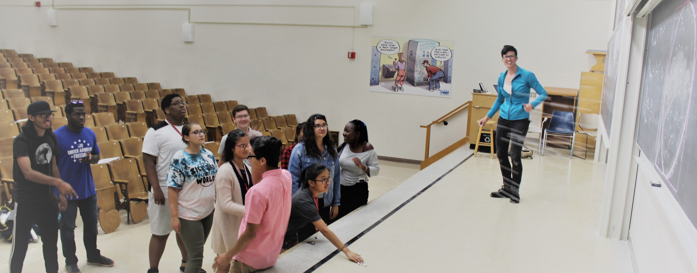

ESP 2018 students calculate \(\pi\) using the Monte Carlo method. Photo credit: Gwendolyn Johnson.
Teaching
Currently, I am a graduate student TA for the University of Wisconsin-Madison math department. I also teach part-time at Madison Area Technical College.
Physics of Everyday Life. Instructor. Department of Physical Science, Madison Area Technical College, Spring 2020.
I am the primary instructor for Physics of Everyday Life, which covers a broad variety of physical concepts we encounter in our day-to-day lives.
Calculus 3. Teaching assistant coordinator. Mathematics Department, UW-Madison, Spring 2020.
In the UW-Madison math department, TA coordinators write all the worksheets and quizzes for the students, and provide a liason between the other TAs and the students, as well as the other TAs and the primary instructor.
College Physics I. Instructor. Department of Physical Science, Madison Area Technical College, Fall 2019.
I am the primary instructor for an introductory physics class which covers mechanics and heat for technical program students.
Calculus 3. Teaching assistant coordinator. Mathematics Department, UW-Madison, Fall 2019.
In the UW-Madison math department, TA coordinators write all the worksheets and quizzes for the students, and provide a liason between the other TAs and the students, as well as the other TAs and the primary instructor.
Calculus 2. Teaching assistant coordinator. Mathematics Department, UW-Madison, Fall 2018.
In the UW-Madison math department, TA coordinators write all the worksheets and quizzes for the students, and provide a liason between the other TAs and the students, as well as the other TAs and the primary instructor.
ESP is for high school rising juniors and seniors from underrepresented groups interested in becoming engineers. The experience is intended to simulate one's first year at UW-Madison as an engineering major: the students live in the dorms for six weeks, and take math, physics, chemistry, technical writing, and do a engineering project. As the precalculus instructor, I designed a six-week course in order to prepare the students for calculus and help them place into calculus, based on UW-Madison's own placement test. We focused on real-life examples, with as much connection to their engineering project as possible.
Calculus 1. Teaching assistant. Mathematics Department, UW-Madison, Spring 2018.
Physics for Scientists and Engineers: Electricity and Magnetism. Teaching assistant. Physics Department, UW-Madison, Fall 2017.
Intro to Modern Physics. Tutor. Physics Department, Reed College, Fall 2015-Spring 2016.
I created a three-times weekly drop-in tutoring program staffed by all-female tutors for the sophomore physics class after noticing a diversity drop-off in the physics students after the sophomore year.